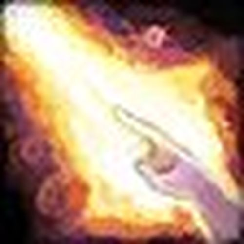
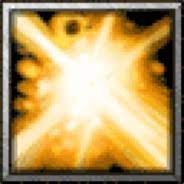

Primero para curar con holy paladin debes de entender
un poco de lo que tratan sus habilidades debido a que no es una healer
comun y corrientetenemos lo que conocemos como  choque sagrado
que es un hechizo instantaneo que cura una gran cantidad de vida a los aliados,
tambien puedes usar habilidades que se castean para curar como ejemplo
luz sagrada que es una
habilidad que tambien cura mucho pero tiene un tiempo de casteo muy largo que aveces vale
la pena esperar por la curacion, aunque normalmente con el choque sagrado es suficiente en pocas palabras
el paladin sagrado es un buen healer que se caracteriza por sus curaciones fuertes pero la unica debilidad que tiene
es que debe exponerse mucho para poder curar bien debido a su maestria que hace que mientras mas cerca es te de
los aliados a los que vaya a curar sus curaciones son mas potentes